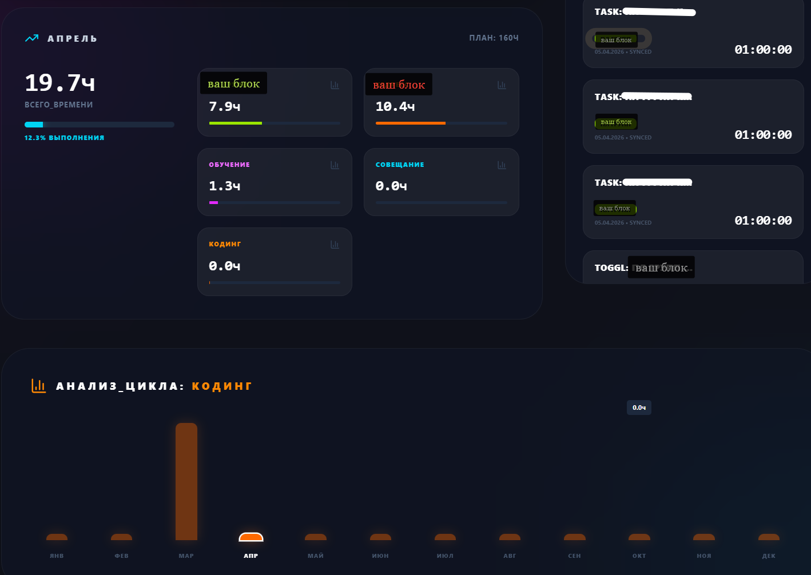

Исследование процесса
Кто и как работает сейчас, какие данные используются, где возникают повторы, задержки и ошибки.
Екатерина Колесникова
Изучить.
Спроектировать.
Внедрить.
Изучаю, как сейчас устроена работа заказчика, какие данные и инструменты уже используются, а затем проектирую и внедряю подходящее веб-решение.
Подход к задаче
Изучаю процессы, таблицы, документы и действующие системы, чтобы веб-продукт дополнял бизнес, а не создавал ещё один неудобный инструмент.
Кто и как работает сейчас, какие данные используются, где возникают повторы, задержки и ошибки.
Пользователи, роли, сценарии, структура данных, интерфейсы и связи с существующими сервисами.
Внутреннее приложение, CRM, калькулятор, дашборд или другой рабочий инструмент под задачу.
Подключение данных, тестирование сценариев, инструкции и доработка по итогам реальной работы.
Примеры работ
В портфолио используются обезличенные демонстрационные данные.
Финансы и производство
Единый экран с итогами, планом и фактом, выручкой, себестоимостью, маржой и производственными показателями.
Внутреннее веб-приложение
Интерфейс для внесения приходов и расходов с категориями, комментариями, документами и историей операций.

Команда и проекты
Рабочее приложение с таймером, проектами, задачами, журналом записей и статистикой за период.
Что можно внедрить
Калькуляторы, модели, автоматизация Google Sheets и Apps Script для конкретного процесса.
CRM, системы учёта, формы для сотрудников, личные кабинеты, роли пользователей и отчёты.
Обмен данными между сервисами, уведомления, дашборды и интеграции с 1С.
Как строится работа
До разработки фиксируем задачу, пользователей, источники данных и критерии готовности. Так решение остаётся понятным и проверяемым.
Что происходит сейчас, где возникает ручная работа и какой результат нужен.
Состав данных, роли, экраны, расчёты и связи с другими системами.
Рабочая версия, проверка логики и последовательное добавление функций.
Передача решения, инструкции и согласованные изменения после начала работы.
Обсудить проект
В сообщении можно описать задачу своими словами и приложить таблицу или скриншот. Я задам уточняющие вопросы и предложу возможный формат решения.